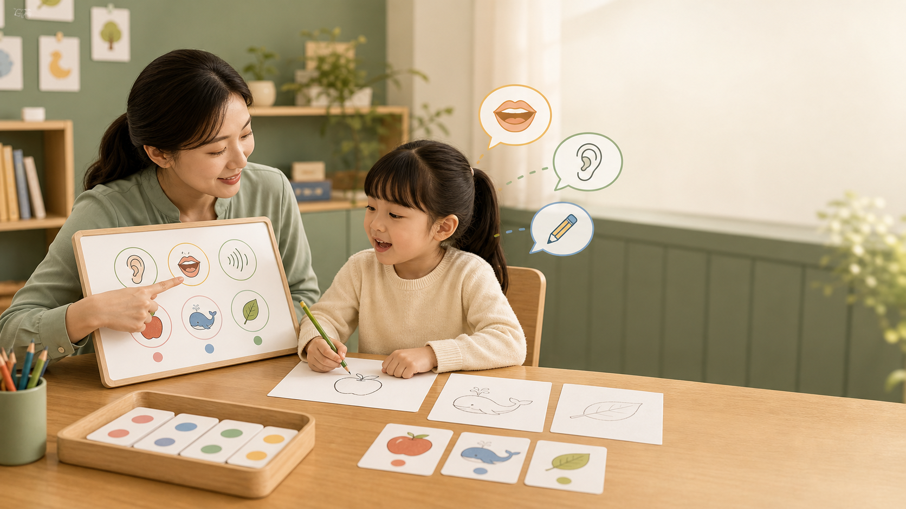

Look & Say
단어를 오래 해독하지 않고 바로 보고 말하는 반응 속도를 키웁니다.
PERS ACADEMY는 초등 저학년 아이들이 파닉스, 리딩 플루언씨, 스토리텔링을 통해 영어 커뮤니케이션의 기초를 단단히 세우는 북클럽형 영어학원입니다.
Sight Words Fluency
자주 만나는 단어를 눈으로 알아보고, 소리로 말하고, 짧은 문장 속에서 바로 읽어내는 훈련을 합니다. 단어 암기가 아니라 읽기 속도, 정확도, 자신감을 만드는 플루언씨 루틴입니다.
단어를 오래 해독하지 않고 바로 보고 말하는 반응 속도를 키웁니다.
the, is, in 같은 핵심 단어를 짧은 구와 문장 안에서 자연스럽게 읽습니다.
반복 읽기, 정확도 체크, 작은 성공 경험을 통해 북클럽 리딩으로 연결합니다.
Book Club Foundation
퍼스 아카데미는 북클럽을 중심으로 듣기, 따라 읽기, 소리 인식, 짧은 말하기, 그림 읽기, 역할극을 한 흐름으로 묶습니다. 아이는 책을 통해 영어를 만나고, 선생님은 상담 데이터를 통해 아이에게 맞는 시작점을 찾습니다.
파닉스와 사이트워드를 읽기 전 단계가 아니라 fluency의 출발점으로 다룹니다.
그림책, picture talk, one-minute speaking으로 말할 이유가 있는 영어를 만듭니다.
학습유형, 페르소나, 레벨테스트를 합쳐 학부모가 이해할 수 있는 리포트로 제공합니다.
Admission Counseling Flow
1차 상담은 학부모 설문, 학습유형 설문, 페르소나 설문을 바탕으로 진행하고, 학생은 별도 레벨테스트를 통해 현재 영어 사용 레벨을 확인합니다.
학부모가 홈페이지에서 등원상담을 신청하고 기본 정보를 제출합니다.
기본 설문, 학습유형, 페르소나 유형 조사가 하나의 세트로 이어집니다.
원장님이 1차 분석을 바탕으로 아이의 학습 방향과 등원 적합성을 상담합니다.
학생은 별도로 파닉스, 리딩, 말하기 중심의 레벨테스트를 진행합니다.
학습유형, 성격유형, 영어 레벨을 합쳐 학부모용 상담 리포트를 제공합니다.
Somi Story Circle
소미샘이 들려주는 이야기와 설명을 듣고, 학생들이 직접 스토리를 만들고 들려주는 활동이 이곳에 쌓입니다. 기존 앱 연결 영역은 이제 스토리텔링 활동과 리터러시 앱으로 들어가는 입구 역할을 합니다.

Parent Guide
사이트워드와 파닉스 플루언씨 테스트는 단순히 단어를 맞히는 시험이 아닙니다. 선생님이 들려주는 소리를 아이가 빠르게 말하고, 그 소리를 그림으로 떠올리고, 문자로 다시 써낼 수 있는지 확인합니다.
아이가 빠르게 소리로 꺼낼 수 있는 사이트워드와 기본 어휘를 측정합니다.
들은 소리와 단어가 그림, 의미, 장면으로 즉시 연결되는지 봅니다.
소리와 의미를 문자로 다시 써내며 파닉스 적용력을 확인합니다.
세 능력이 하나로 엮일 때 아이는 원어민적인 커뮤니케이션의 기초를 갖게 됩니다. 그래서 퍼스에서 배우는 파닉스는 발음 규칙 암기가 아니라, 더 좋은 커뮤니케이션을 시작하게 하는 첫 단초입니다.
도입 질문, 장면 상상, 캐릭터 말하기, 발표 순서를 소미샘의 설명으로 안내합니다. 아이들은 듣고, 따라 말하고, 자기 장면을 만들어 이야기합니다.
스토리메이커와 스토리텔러 활동은 북클럽과 연결됩니다. 읽은 책을 다시 말하고, 새 장면을 만들고, 친구에게 들려주는 과정이 누적됩니다.
Counseling Request
이 첫 버전은 홈페이지 안에서 상담 신청 흐름을 보여주는 프론트엔드 시작점입니다. 제출 내용은 현재 브라우저에만 임시 저장됩니다.
학부모 연락처와 아이의 현재 영어 경험을 확인합니다.
원장 상담 전에 아이의 학습 반응과 성향을 먼저 읽습니다.
학생의 실제 영어 사용 수준을 Beginner, Foundation, Developing 단계로 확인합니다.
PERS ACADEMY Begins
다음 단계는 실제 DB 연결, 설문 문항 확정, 파닉스 플루언씨 앱 본 기능 연결, 학부모 리포트 자동 생성입니다.